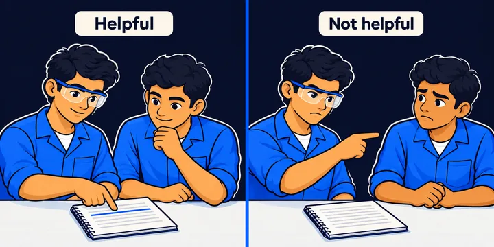
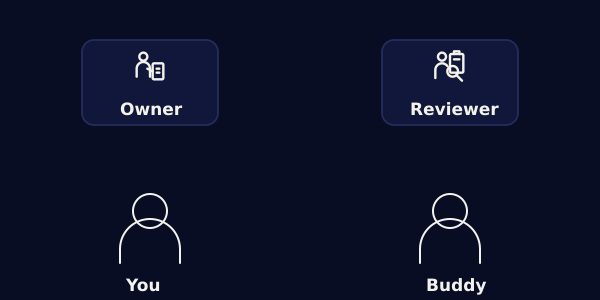

Activity with a buddy · About 15 minutes
AAI-E-MC1-S03-COMM01
Peer Exchange — Check Before You Use
You and a buddy exchange one checked AI note. You review each other's marking, give feedback, revise and then swap roles.
You need a buddy and one checked note between you. The whole activity takes about 15 minutes.
Swift AI Academy · PC 4.1–4.5 · PC 5.1–5.4 · English
How it works
This activity has three steps.
You show the AI version and your corrected version side by side. Your buddy gives one strength, one risk and one suggestion.
Your task. Put the three steps in the right order.
- Exchange one checked note with your buddy.
 Review each other's marking with a short rubric.
Review each other's marking with a short rubric.- Revise your note, then swap roles and do it again.
Step 1
Who is the Owner first?
The Owner shares the note. The Reviewer checks it with the rubric, and you swap for round 2.
Your task. Choose who is the Owner first. Then sort each job into the right role.
Step 2
Which setting is closer to your own?
You can use an ITI note or a higher education note. Each setting has one AI note and one corrected note.
Your task. Choose your setting from the list.

Step 2 · ITI · Industrial visit note
This is the note that the AI tool wrote.
The Owner marked some parts of the note. Read the note and look at the marked parts.
Your task. Read the note, then answer the question.
AI version
Why are these parts of the note marked?
Step 2 · ITI · Industrial visit note
This is the Owner's corrected note.
Compare it with the AI note on the last screen. Look at what changed in each marked part.
Your task. Read the note, then answer the question.
Owner’s corrected version
What did the Owner do with the parts that were wrong or not confirmed?
Step 3
Does your buddy's note meet the rubric?
You are the Reviewer now. Tick only what you really see in your buddy's note.
Your task. Tick each rubric point that your buddy's note meets.
Step 4
Now you give your buddy feedback.
A strength says what worked, with evidence. A risk says what could still go wrong.
Your task. Type one strength, one risk and one suggested change.
Step 4
You can disagree and still be respectful.
If you disagree, say it plainly and give a reason. Talk about the note, not the person.
Your task. Stamp each sentence Helpful or Not helpful.

Reviewer: "I see this differently because the register shows another number."
Reviewer: "This is wrong. You always guess."
Owner: "That is fair. I will check it again."
Owner: "I kept this because the visit register confirms it."
Step 5
The Owner revises the note on the clock.
The Owner uses the feedback from Step 4. Run the timer for this phase, and for the earlier phases if you did not run them yet.
Your task. You can start the timer. Then type one change that you made.
02:00
Revision
The Owner makes at least one change based on the feedback.
Step 6
Now swap roles and do round 2.
The Reviewer becomes the Owner. Do Steps 2 to 5 again with your new roles.
Your task. Type how getting feedback felt different from giving it.

Your evidence
Do you have all four parts of your evidence?
Check each part. Then you can download your answers.
Your task. Tick each part that you have.
Download your answers before you close.
Your task. Tap Download my answers to save your work.
This page does not save your work. Download it, or show it to your facilitator, before you close this tab.
Never type real names, marks, phone numbers, addresses, health information or ID numbers into an AI tool. Use made-up details for practice.